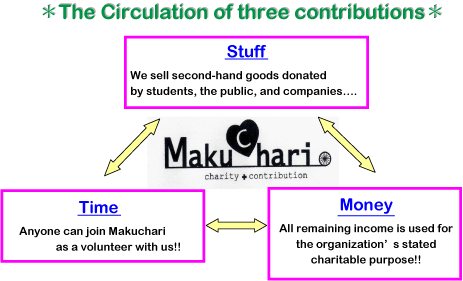

Å@
The name ÅgMakuchariÅh comes from Makuhari Charity-Flea market,
and is modeled on the charity shop in the UK called Oxfam, which
has the largest number of charity shops (recycle shops.) This
charitable event started to be held at KUIS (Kanda University
of International Studies) in 2005 for the purpose of
fundraising through the flea market.
Makuchari is organized by KUIS CUP (Create Universal Peace)
which is an organization run by students volunteer in KUIS. KUIS
CUP was established in 2004 with the intention that it would
serve as a catalyst for good works, bringing together KUIS CUP
members, volunteers and the local people and businesses for the
benefit of society. Also, KUIS CUP is the first organization to
hold a charity flea market in Japan. We work in close
cooperation with multiple sectors such as the university, the
public, companies, and collaborate with them thorough this
enjoyable event!! In this festival, anyone can join easily and
try to think charitably. Moreover, being involved with this
event, you will find that there are many great ways which you
can help a little and make the best use of your individual
talents to contribute to society!! WeÅfd like our messages to
spread from Makuhari and take root all over Japan in the future.
This flea market for charity based on three contributions that
you can make; Ågstuff,Åh Ågtime,Åh and Ågmoney.Åh In this
cyclic system, at first, we collect the second-hand goods (that
some people donÅft use anymore, but others could still) from
students, teachers of KUIS, the public, and companies in the
surrounding area. Also, some companies support Makuchari by
contributing their goods or samples. Next, these items can be
sold by volunteering staff, and because the price can be very
low, everyone, young or old, can enjoy buying everything from
used items to antiques, clothes, toys, books and so on!!
Furthermore, in this festival there are some amusing events such
as auction, and food stalls as well as the flea market! Finally,
the profits from the sale are donated to a charitable
organization and are used to give necessary support to people in
need.
Since our inception in 2005, weÅfve donated profits to certain
Non-Profit Organizations (NPOs) which aim to contribute to
society. WeÅfve chosen to donate to these organizations with the
purpose of assisting people at the grass-roots level and
supporting their activities to be able to live self-sufficiently.

Makuchari presents you with many great ways in which you can
help a little to contribute to society!!
The things you can do areÅc
1. Bring some second-hand goods you don't use anymore, and at
the same time, it is a good chance to clean out your closet!!
2. Spend your time volunteering with us and enjoying the
flea-market together!!
3. Enjoy the pleasure of hanging out with your friends in the
flea market and find your favorite items there! You can also
enjoy eating the foods, watching various an entertainment shows
and simply relaxing in the natured greenery of KUIS.